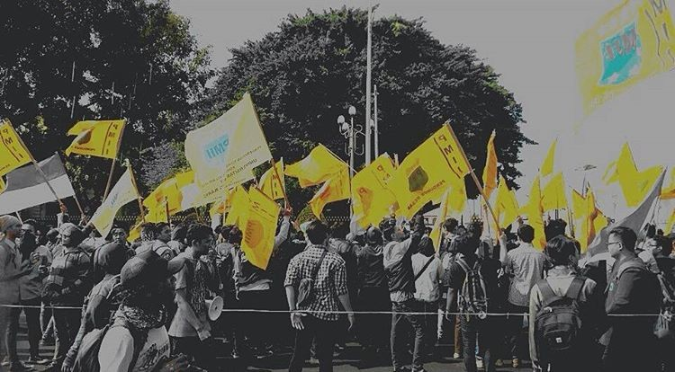
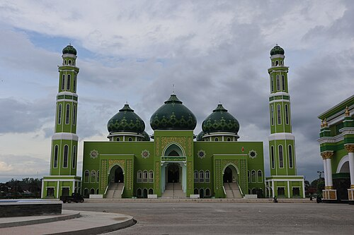

visibility
Visi & Misi
Visi
Terbentuknya pribadi muslim Indonesia yang bertaqwa kepada Allah SWT, berbudi luhur, berilmu, cakap dan bertanggung jawab.
Misi
- Penguatan nilai Aswaja
- Pengembangan intelektual
- Advokasi kebijakan publik
diversity_3
Kekuatan Kolektif
1,248
Mahasiswa bergabung di PC PMII Paser sejak 2020.

SEJARAH KAMI
Jejak Langkah di Tanah Paser
Pergerakan Mahasiswa Islam Indonesia (PMII) Cabang Paser berdiri sebagai wadah aspirasi dan perjuangan mahasiswa di Bumi Daya Taka sejak dekade lalu, berkomitmen menjaga tradisi dan merawat inovasi.
Baca Sejarah LengkapSiap Menjadi Bagian dari Perubahan?
Pendaftaran MAPABA (Masa Penerimaan Anggota Baru) 2026 telah dibuka. Temukan jati dirimu dan asah kepemimpinanmu bersama kami.